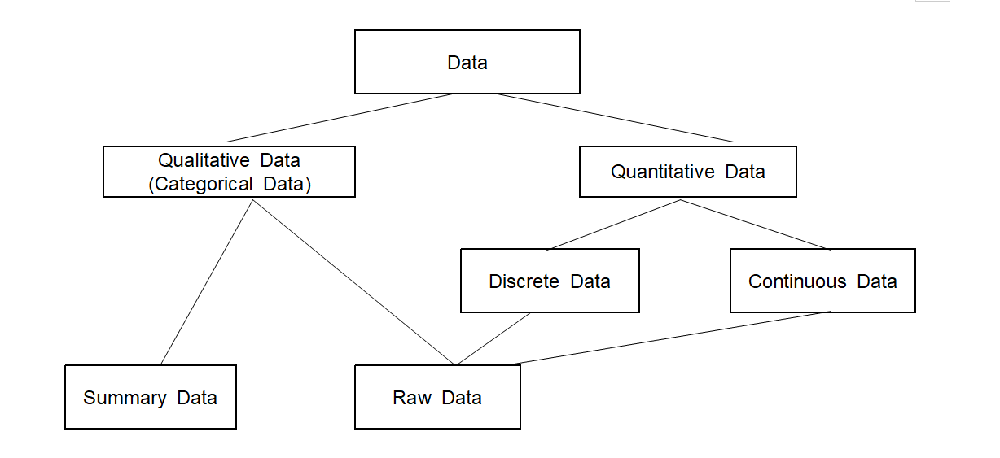

Data are a collection of values or characters which are observed or measured on interesting characteristics from one person or object to another. The characteristic that varies from one person or object to another is called a variable. For example, if you examined gender and height for college students, there are two variables, gender and height. A measurement for gender can be in the form of 'Male' or 'Female' and its data can be 'Female', 'Male', ‘Female’, ... , etc which are a collection of characters. A measurement for height can be 180cm or 170cm and its data are a collection of numerical numbers such as 180cm, 165cm, 158cm, 175cm, ... , etc.
Variables such as gender, marital status, and eye color are called qualitative variables, also called categorical variables which yield non-numerical qualitative data or Qualitative Data. Variables such as height, weight, and years of education are called quantitative variables which yield numerical quantitative data. Values of a qualitative variable are sometimes coded with numbers, for example, zip codes which represent geographical locations. We can not do arithmetic with such numbers as zip codes, in contrast to those of a quantitative variable.
Quantitative variables can be classified as either discrete or continuous. A discrete variable is a variable whose possible values can be countable which imply either finite or countably infinite. A discrete variable usually involves a count of something, such as the number of cars owned by a family, or the number of students in an introductory statistics class. A continuous variable is a variable whose possible values are uncountable real numbers. Typically, a continuous variable involves a measurement of something, such as the age of a person, the weight of a newborn baby, or the fuel mileage of a car. If we measure the height of a student, we usually write it with an integer value such as 180cm which looks like a finite number. But the height is not a discrete variable, because 180cm is an approximation of actual real number such as 180.123456 and therefore the height is a continuous variable.
Quantitative data can be transformed to categorical data by dividing all possible values of a quantitative variable into non-overlapped intervals. For example, age data can be transformed to categorical data by using a transformation such as ‘less than 30’, ‘30 ~ <40)’, ‘40 ~ <60’, ‘greater than 60’.
Types of variables are summarized graphically in <Figure 1.3.1> and verbally in the following definition
Variable
Variable: A characteristic that varies from one person or object to another.
Qualitative variable (Categorical variable): A nonnumerically valued variable.
Quantitative variable: A numerically valued variable.
Discrete variable: A quantitative variable whose possible values can be countable.
Continuous variable: A quantitative variable whose possible values are uncountable real numbers.
<Figure 1.3.1> Types of variables
Example 1.3.1 A survey for 30 students in a college was conducted to examine gender, height and weight. What are variables of this survey and classfy the type of each variable.
Answer
This survey examines three characteristics of each student, gender, height and weights and these characteristics are called variables.
Gender can be either male or female and is called a qualitative variable or a categorical variable.
Height and weight can be any numerical value and are called a quantitative value. Since possible values of height and weight can be any real number, they are called continuous variables.
Data are values of a variable. Depending on the type of a variable, data can be classified either qualitative or quantitative. If data are quantitative, it can be classified either discrete or continuous. Types of data are summarized verbally in the following definition
Data
Data: Values of a variable.
Qualitative (Categorical) data: Values of a qualitative variable.
Quantitative data: Values of a quantitative variable.
Discrete data: Values of a discrete variable.
Continuous data: Values of a continuous variable.
Each individual piece of data is called an observation, and the collection of all observations for a particular variable is called a data set, but sometimes it is called simply called data.
Understanding of data types is essential to apply an appropriate statistical method for data. Method of processing data and its statistical analysis are different depending on the type of data. Chapter 2 of this book introduces the visualization of qualitative data, while Chapter 3 introduces the visualization of quantitative data. Chapter 4 discusses frequency tables and contingency tables which are the summaries of qualitative data, and also discusses tables and summary measures for quantitative data. Chapters 5 - 10 and Chapter 12 discuss theories of statistical analysis for quantitative data. Chapter 11 discusses theory of analysis for categorical data.
In order to do data analysis using software, the qualitative data can be divided into either raw data or summary data. For example, ten students in an elementary school are examined based on their gender such as follows.
This data is referred to as the raw data of the gender variable and can be arranged in a single column of Excel sheet as Table 1.3.1.
Table 1.3.1 Raw data compiled in Excel by gender survey
row
Gender
1
male
2
female
3
male
4
female
5
male
6
male
7
male
8
female
9
female
10
male
We can give a name of this column as 'Gender' which is called a variable name and their possible values, ‘male’ and ‘female’, are called values of the variable or value labels.
If you count the number of male students and female students in Table 1.3.1, there are six male students and four female students and can be summarized as Table 1.3.2. These frequency data are called the summary data of the gender variable and it is called a frequency table. Excel typically uses this kind of summary data for their graphs.
Table 1.3.2 Summary data for the gender of a class, or a frequency table of gender
Gender
Number of Students
Male
6
Female
4
Types of data are summarized graphically in <Figure 1.3.2>.

<Figure 1.3.2> Types of data
Raw Data and Summary Data
Raw data: Observed list of values of a variable.
Summary data: Frequency data for all possible values of a categorical variable.
Multiple Choice Exercise
*** Choose one answer and click [Submit] button
1.3 Which of the following is a discrete variable?
1.4 Which of the following is a continuous variable?
1.5 Which of the following is NOT a qualitative data?